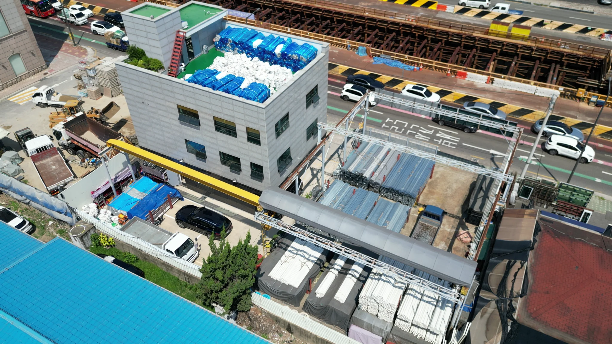

Observe
Separate what is seen from what is assumed.
 JoosAtlasRESEARCH · FIELD · SYSTEMS
JoosAtlasRESEARCH · FIELD · SYSTEMS
ABOUT / JOO YONG-HOE
Joo Yong-Hoe 주용회
He works where rigorous spatial measurement, industrial operation and professional community meet.
Joo Yong-Hoe is a Ph.D. Candidate in the School of Civil & Environmental Engineering at Yonsei University and a researcher in the GIS Remote Sensing and Surveying Laboratory. He is also President of Daejin Pipe Co., Ltd. and President of ACERS.
JoosAtlas is the independent platform through which those roles are made legible: research questions become auditable methods, field constraints become design criteria, and technical ideas become public explanations and deployable systems.

01 / RESEARCH
His academic work examines how surveying, photogrammetry, computer vision and spatial evidence can be connected without allowing any single observation to validate itself.
02 / OPERATOR
The welding image records Joo Yong-Hoe personally working inside the industrial environment he also manages.
The relevance is not theatrical. Hands-on practice changes how constraints are recognized: material, access, heat, safety, time and consequence are not variables on a page. They are operating conditions.
“The same standard should survive the paper, the field and the operating decision.”

03 / INDUSTRY
Material handling, fabrication, inventory, logistics, safety and customer response create a real environment in which digital methods must remain useful.


COMMUNITY
ACERS / YONSEI GRADUATE SCHOOL OF ENGINEERING
As President of ACERS, Joo contributes to a professional and alumni community connecting civil engineering, environmental resilience, safety and practice.

WORKING METHOD
Separate what is seen from what is assumed.
Anchor the question to a physical or operational reference.
Turn the method into an explanation, tool or system.
Withhold claims that the evidence chain cannot support.